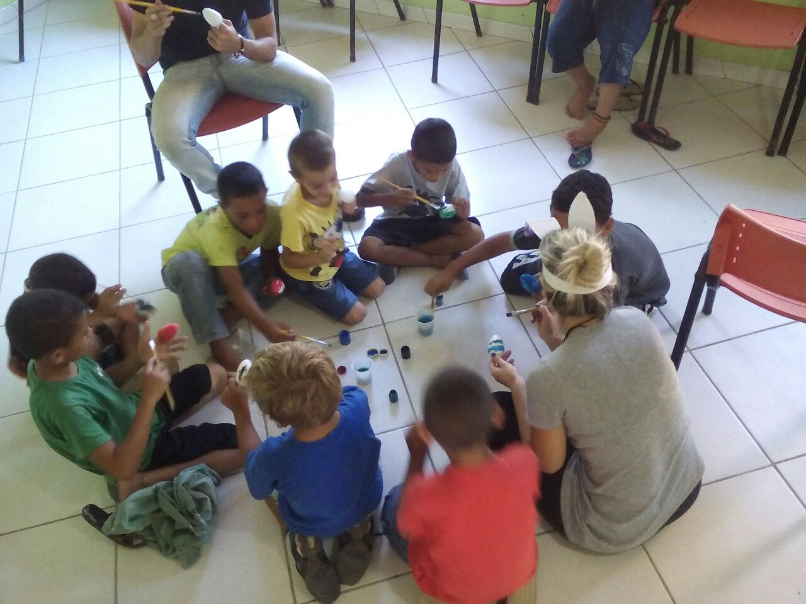
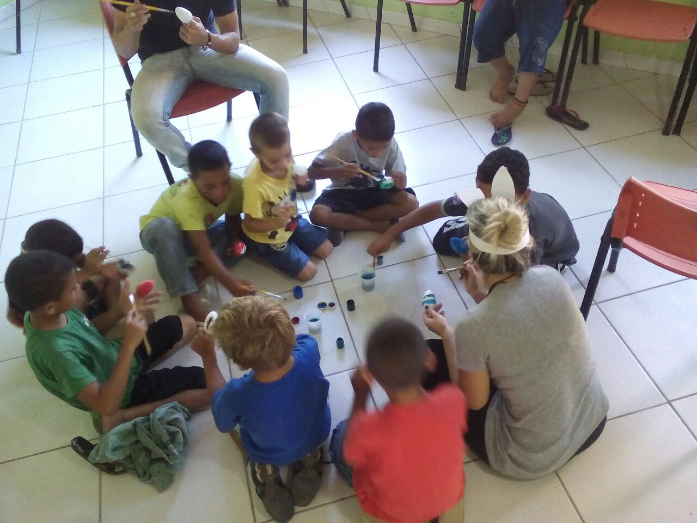

Code Club
Você já teve dificuldades no seu projeto de informática? Teve complicações com uma classe Java que não compilava? Um banco de dados que não conectava? Um driver linux que você não conseguiu achar? Imagine como seria difícil se você não tivesse acesso a internet ou nem mesmo um computador? Como você poderia aprender tudo que que sabe hoje? Nossos problemas do dia a dia são algumas vezes muito difíceis de serem resolvidos e a ajuda de pessoas muitas vezes tornaram nossa vida mais fácil.
Eu aprendi na comunidade open source que "um sonho que se sonha só é apenas um sonho que se sonha só, mas um sonho que se sonha junto se torna realidade". Você pode sonhar junto conosco e assim teremos condições de dar um futuro melhor para essas crianças. Já temos MUITO... material didático, uma metodologia, voluntários que vão doar seu tempo, um local para realizar o projeto e crianças que sonham em ter oportunidades de uma vida melhor. Agora só faltam os computadores!
O Projeto Dorcas é uma instituição sem fins lucrativos, que foi fundada em 2013 e tem sua unidade infantil na maior favela de Santa Catarina, comunidade do Frei Damião, na busca de promover justiça e transformação através de ações socioeducativas. Este projeto atende a quarenta e cinco crianças e adolescentes (na faixa etária de 06 a 16 anos) desenvolvendo atividades variadas tais como: aulas de inglês, música, dança, artes marciais dentre outras atividades socioeducativas, além de proporcionar alimentação aos envolvidos. Os colaboradores são voluntários e tudo provém de doações.
No início de 2017 será iniciado um projeto chamado CodeClub, que visa capacitar crianças com idade a partir de 07 anos no exercício da lógica de programação através da criação de jogos e animações, estimulando o desenvolvimento criativo e intelectual.
Programação de computadores é uma habilidade importante na atualidade e acreditamos que as crianças também devam saber como estes recursos tecnológicos funcionam internamente para desenvolverem os conhecimentos necessários para que elas possam além de criar planilhas, textos ou usar a internet produzirem seus próprios programas. Em um contexto de vulnerabilidade social e muita pobreza, isso, com certeza, pode trazer boas perspectivas de um futuro melhor para as crianças.
Para a realização desse projeto, precisamos de auxílio para adquirir sete computadores. O valor de cada computador é de R$1410,00, dando um total de R$9870,00. Se você quer incentivar esse projeto, por favor, faça a sua doação.

 


Site do projeto: www.projetodorcas.org.br